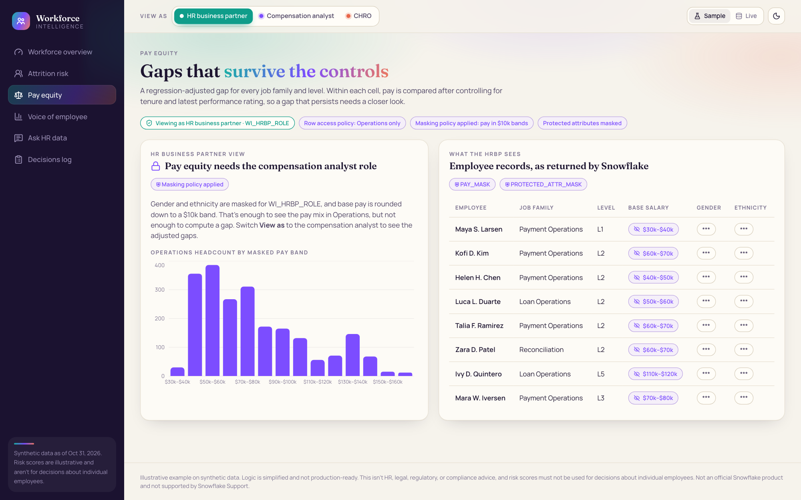
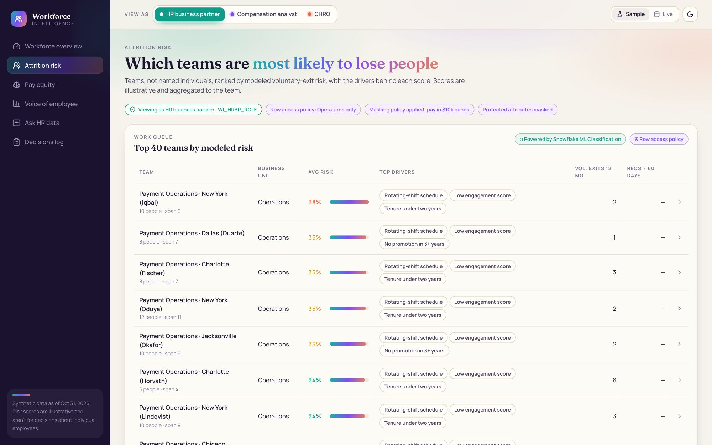
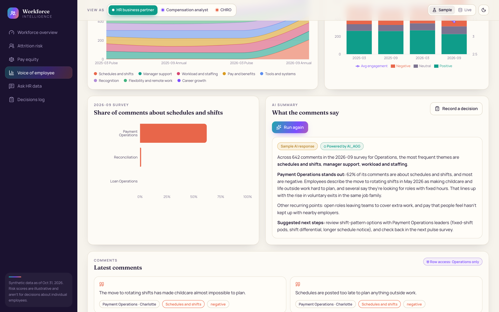
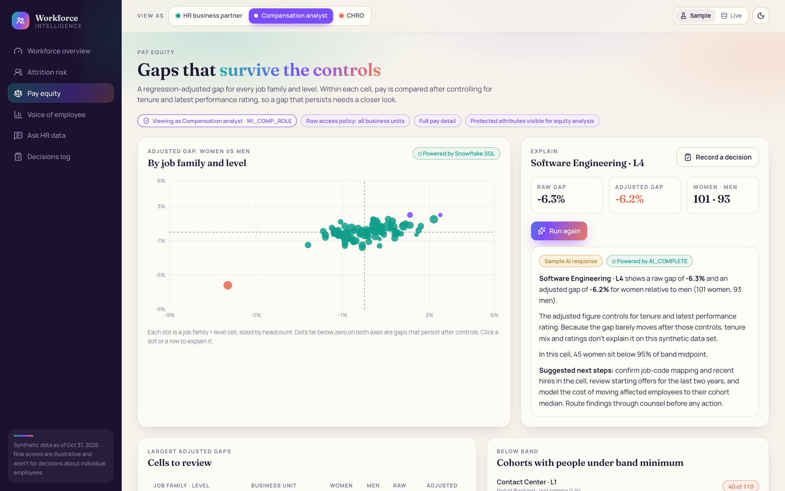
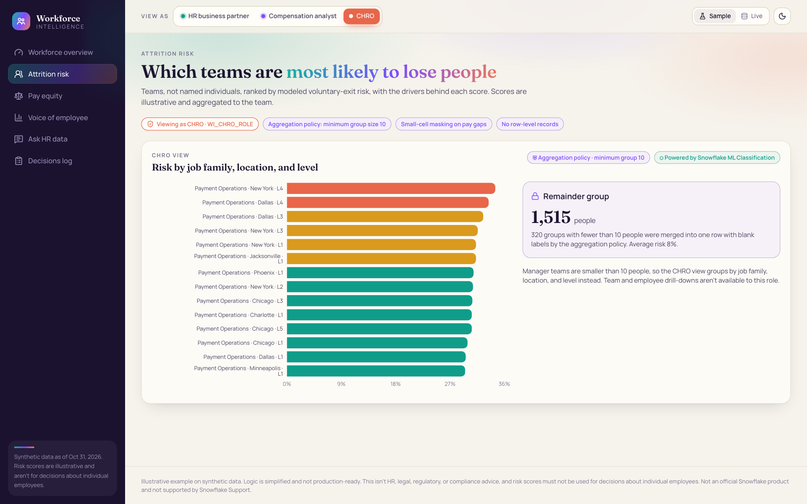
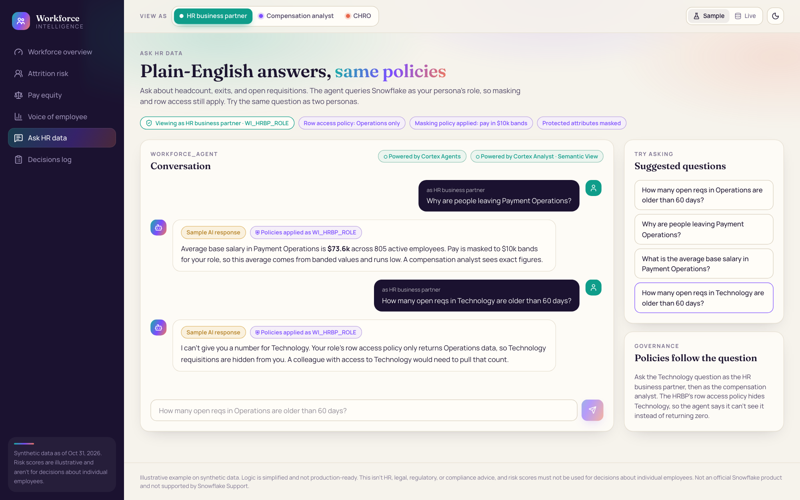
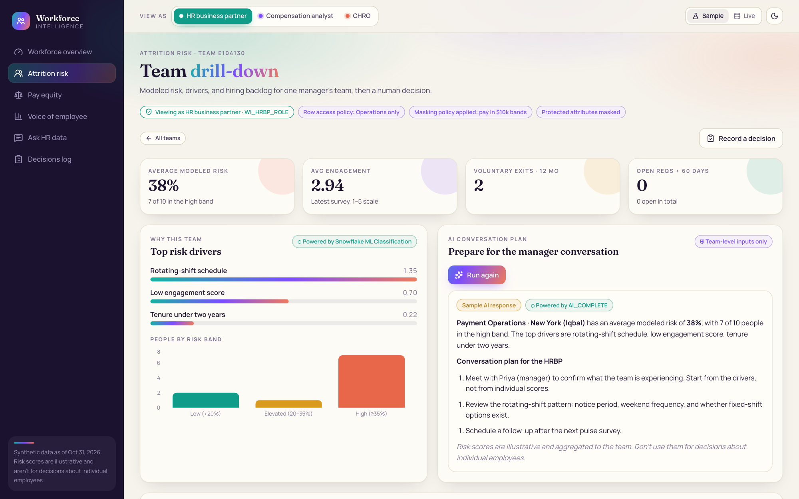

Follow one story, persona by persona.
Every number below comes from the example's synthetic data set. The findings were planted so a walkthrough has something to find.
The HR business partner sees banded pay, not salaries.
The same employee records come back from Snowflake with base pay rounded down to a $10k band and protected attributes as ***. That's enough to read the pay mix, but not enough to work out what anyone earns.

Attrition risk flags Payment Operations.
Teams are ranked by modeled voluntary-exit risk, with the top drivers for each. Payment Operations teams dominate the HRBP's queue after a May 2026 move to rotating shifts. On this synthetic data set, that job family had 186 voluntary exits in six months, against 51 in the six months before.

The survey explains why.
Comments are classified by theme and sentiment. In the latest survey, most Payment Operations comments are about schedules and shifts, against 1–3% for other job families. An AI summary pulls the themes together and suggests next steps.

The compensation analyst finds a gap that survives the controls.
Within each job family and level, pay is compared after controlling for tenure and latest rating. In Software Engineering L4, women's pay is 6.2% lower than men's after those controls (101 women, 93 men, on this synthetic data set). An AI explanation summarizes what to check next.

The CHRO sees aggregates, with small groups suppressed.
For the CHRO, any group under 10 people is merged into one remainder row with blank labels. That's 1,515 people across hundreds of small cells. Team drill-downs aren't available, and pay gaps for small cells come back blank.

Ask in plain English. The policies still apply.
A Cortex Agent answers questions through a semantic view. Ask about Technology requisitions as the HRBP and the agent explains that the data is hidden for that role, instead of returning a misleading zero. Ask as the compensation analyst and you get the number.

People make the call, and it's recorded.
From a team or a pay cell, the reader drafts a conversation plan with AI, then records a decision: flag, assign, escalate, or add a note. In live mode each decision is written to a Snowflake table stamped with the role that made it.
